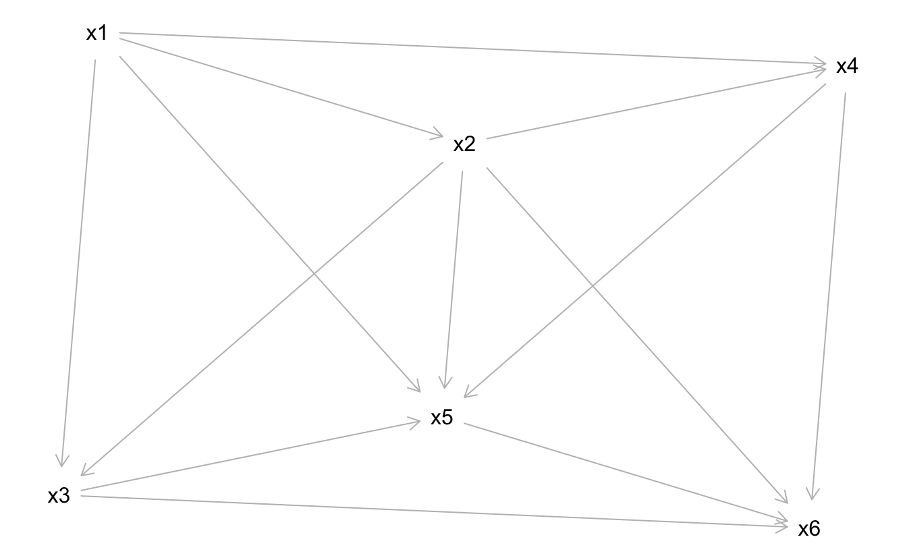

kausal23
dag
causal
Exercise
Gegeben sei der DAG g (s. u.). Der DAG verfügt über mehrere Variablen, die als Knoten im Graph dargestellt sind und mit \(x_1, x_2, \ldots x_n\) bezeichnet sind.
Welche minimale Variablenmenge muss kontrolliert werden, um den kausalen Effekt von der UV zur AV zu identifizieren?
UV: x6.
AV: x5.
Hinweise:
- Mengen sind mittels geschweifter Klammern gekennzeichnet, z.B.
{x8, x9}meint die Menge mit den zwei Elementenx8undx9. - Die leere Menge
{ }bedeutet, dass keine Variable kontrolliert werden muss, um den kausalen Effekt zu identifizieren. - Alle Variablen werden als gemessen vorausgesetzt.
- Es ist möglich, dass es keine Lösung gibt, dass es also keine Adjustierungsmenge gibt, um den kausalen Effekt zu identifizieren. Wenn dies der Fall sein sollte, wählen Sie “/”.
Answerlist
- /
- { x3, x4 }
- { x1, x4 }
- { x2, x6 }
- { x5 }
Solution
Folgende minimale Variablenmenge muss kontrolliert werden, um den kausalen Effekt der UV auf die AV zu identifizieren: /.
Es wird also nach dem minimal adjustment set gefragt. Zu beachten ist, dass es weitere, aber größere Mengen geben kann, die den kausalen Effekt identifizieren, aber gefragt ist nach der minimalen Menge. Außerdem ist es möglich, dass es weitere minimale Adjustierungsmengen gibt, die aber nicht in der Auswahlliste vorkommen.
Erläuterung:
UV und AV sind (durch mindestens einen offenen Pfad) verbunden (“d-connected”).
Folgende Unabhängigkeitsbeziehungen (_||_) werden durch den DAG definiert:
x1 _||_ x6 | x2, x3, x4, x5
x3 _||_ x4 | x1, x2UV und AV werden durch folgende Pfade verbunden:
$paths
[1] "x6 <- x2 -> x3 -> x5" "x6 <- x2 -> x3 <- x1 -> x4 -> x5"
[3] "x6 <- x2 -> x3 <- x1 -> x5" "x6 <- x2 -> x4 -> x5"
[5] "x6 <- x2 -> x4 <- x1 -> x3 -> x5" "x6 <- x2 -> x4 <- x1 -> x5"
[7] "x6 <- x2 -> x5" "x6 <- x2 <- x1 -> x3 -> x5"
[9] "x6 <- x2 <- x1 -> x4 -> x5" "x6 <- x2 <- x1 -> x5"
[11] "x6 <- x3 -> x5" "x6 <- x3 <- x1 -> x2 -> x4 -> x5"
[13] "x6 <- x3 <- x1 -> x2 -> x5" "x6 <- x3 <- x1 -> x4 -> x5"
[15] "x6 <- x3 <- x1 -> x4 <- x2 -> x5" "x6 <- x3 <- x1 -> x5"
[17] "x6 <- x3 <- x2 -> x4 -> x5" "x6 <- x3 <- x2 -> x4 <- x1 -> x5"
[19] "x6 <- x3 <- x2 -> x5" "x6 <- x3 <- x2 <- x1 -> x4 -> x5"
[21] "x6 <- x3 <- x2 <- x1 -> x5" "x6 <- x4 -> x5"
[23] "x6 <- x4 <- x1 -> x2 -> x3 -> x5" "x6 <- x4 <- x1 -> x2 -> x5"
[25] "x6 <- x4 <- x1 -> x3 -> x5" "x6 <- x4 <- x1 -> x3 <- x2 -> x5"
[27] "x6 <- x4 <- x1 -> x5" "x6 <- x4 <- x2 -> x3 -> x5"
[29] "x6 <- x4 <- x2 -> x3 <- x1 -> x5" "x6 <- x4 <- x2 -> x5"
[31] "x6 <- x4 <- x2 <- x1 -> x3 -> x5" "x6 <- x4 <- x2 <- x1 -> x5"
[33] "x6 <- x5"
$open
[1] TRUE FALSE FALSE TRUE FALSE FALSE TRUE TRUE TRUE TRUE TRUE TRUE
[13] TRUE TRUE FALSE TRUE TRUE FALSE TRUE TRUE TRUE TRUE TRUE TRUE
[25] TRUE FALSE TRUE TRUE FALSE TRUE TRUE TRUE TRUEOffenen Pfade sind der/die Pfad/e, die in der obigen Ausgabe unter $open mit TRUE gekennzeichnet sind.
Der DAG ist wie folgt definiert:
[1] "\ndag {\nx1\nx2\nx3\nx4\nx5\nx6\nx1 -> x2\nx1 -> x3\nx1 -> x4\nx1 -> x5\nx2 -> x3\nx2 -> x4\nx2 -> x5\nx2 -> x6\nx3 -> x5\nx3 -> x6\nx4 -> x5\nx4 -> x6\nx5 -> x6\n}\n"Answerlist
- Richtig
- Falsch
- Falsch
- Falsch
- Falsch
Dieser DAG ist nicht ganz ein Gespenster-DAG. Es stimmt fast, dass man alle nicht-kausalen Pfade zumachen (blockieren) kann. Aber nicht ganz: Der Pfad von AV zu UV muss offen bleiben. Und dieser Pfad ist NICHT kausal in diesem DAG, da er in die falsche Richtung zeigt (von AV zu UV, was die falsche Richtung ist). Darum ist es ein ‚Äúbiasing path‚Äù, ein ‚Äúb√∂ser Pfad‚Äù. Aber man kann ihn nicht zumachen, da man keine Pfade mit UV oder AV zumachen kann. Insofern ist dieser DAG ein verlorener Fall. üëª
Es ist also ein bisschen ein Spezialfall. Wie gesagt, der entscheidende Punkt ist, dass der Pfad “x5 (AV) -> x6 (UV)” nicht kausal ist.
Nat√ºrlich ist das Beispiel extrem; niemand w√ºrde so einen DAG spezifizieren (normalerweise). Es macht keinen Sinn, eine Theorie, die sagt ‚ÄúIch glaube, dass meine Ursache eigentliche die Wirkung ist‚Äù. ü§™
Categories:
- dag
- causal